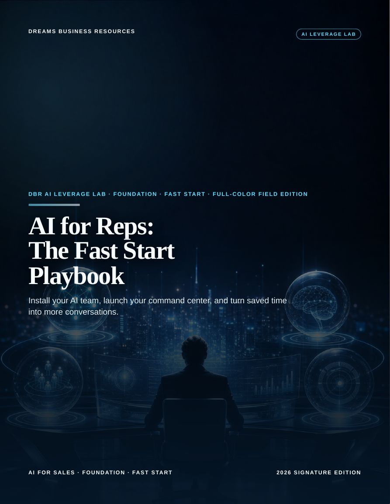
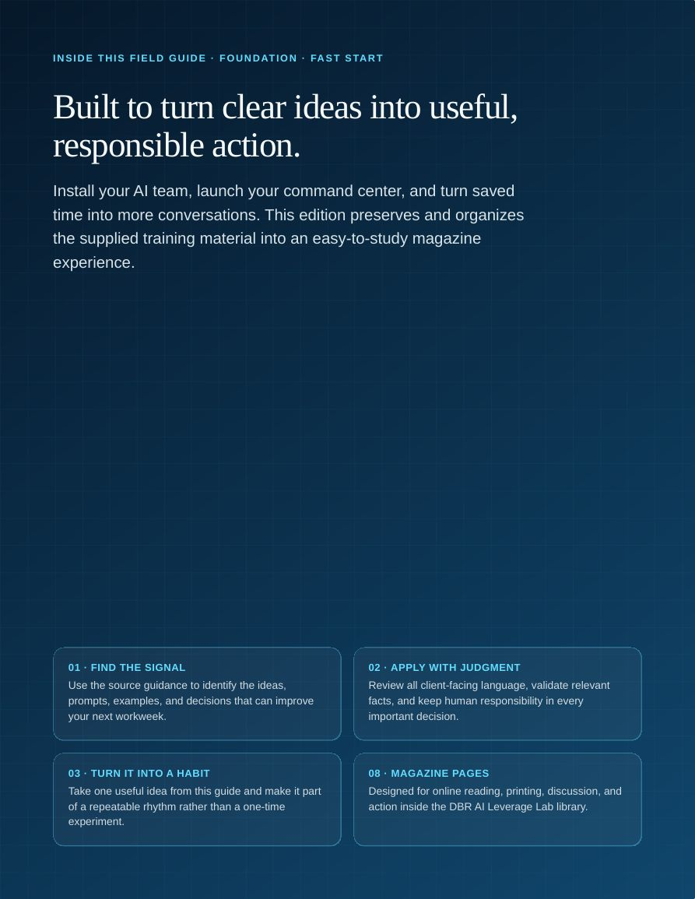
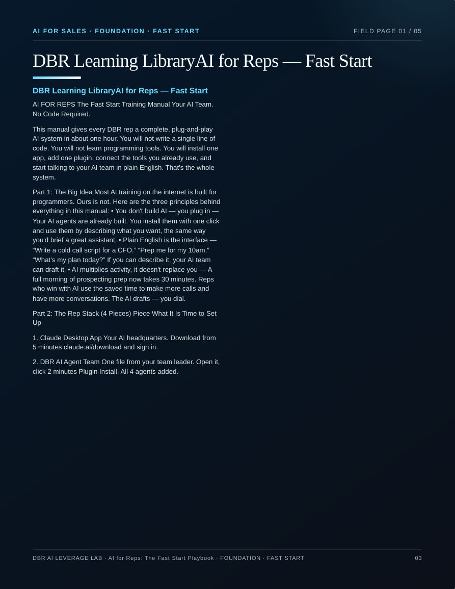
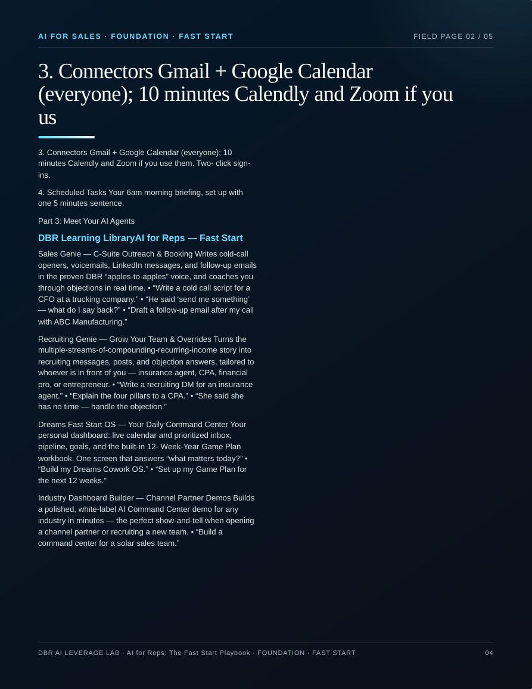
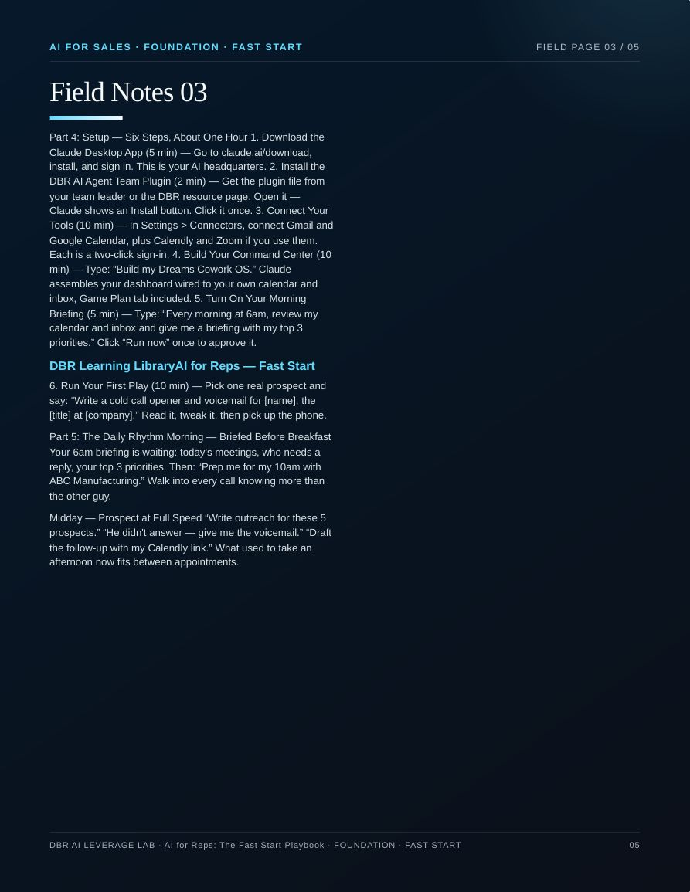
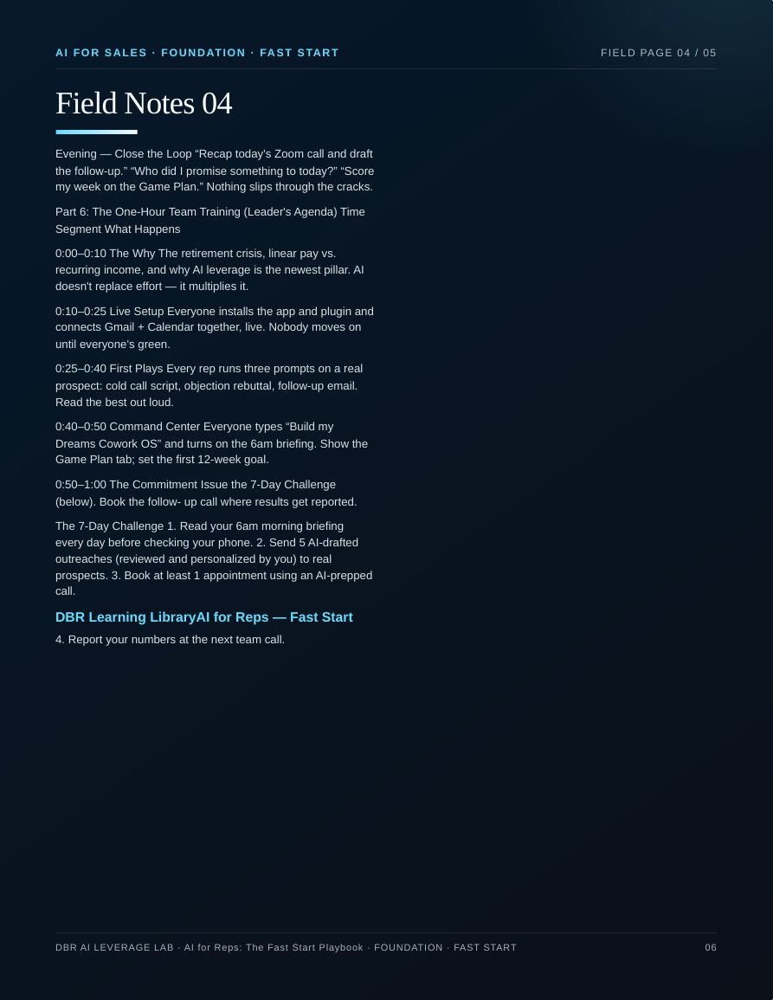
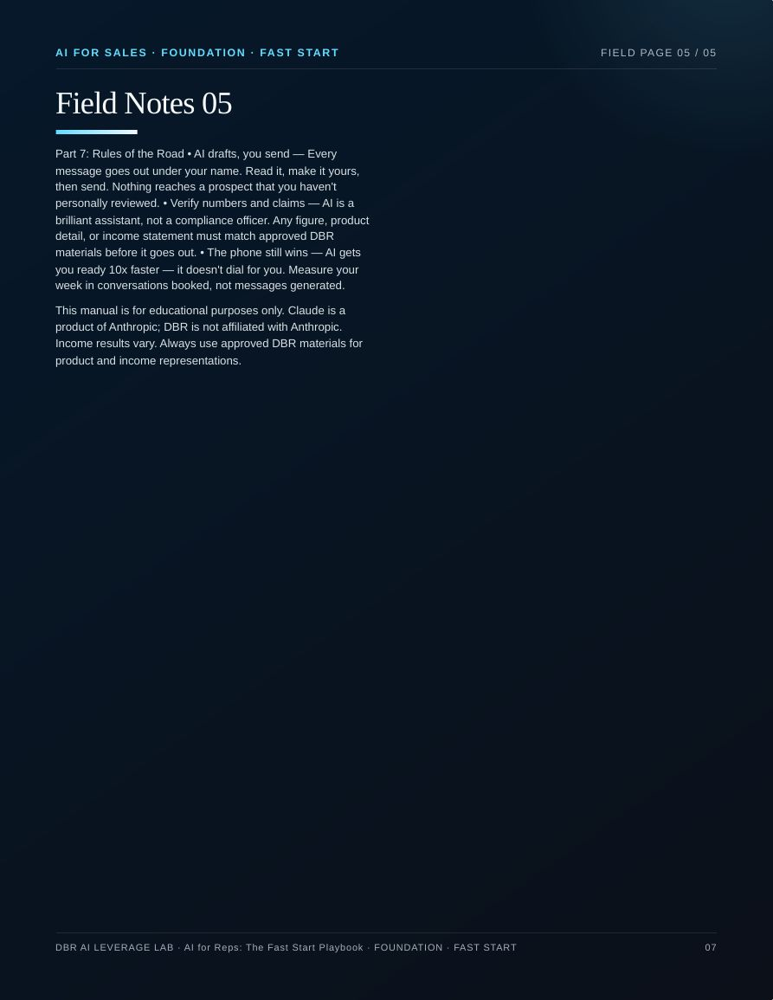
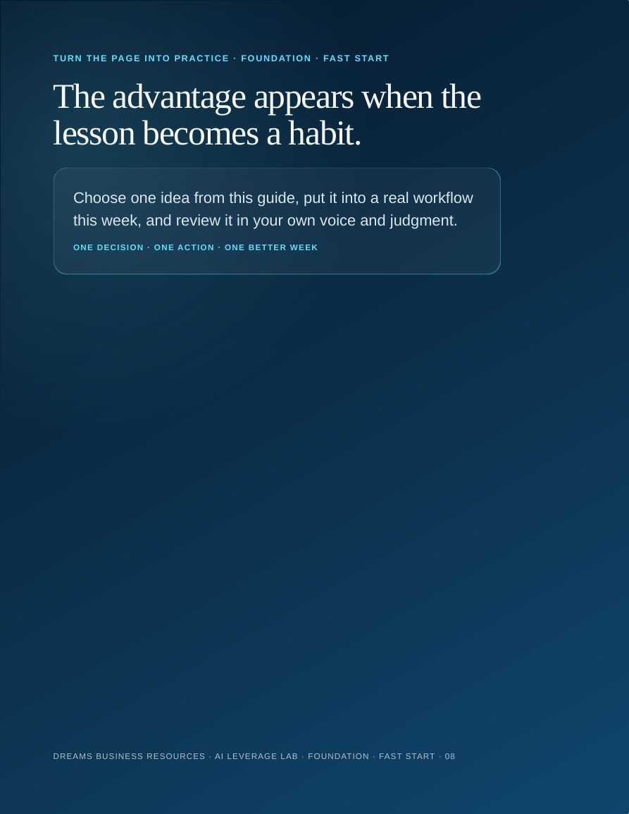

FOUNDATION · FAST START · AI FOR SALES · 8 PAGES
AI for Reps: The Fast Start Playbook
Install your AI team, launch your command center, and turn saved time into more conversations.
Study Online
Use the reading controls to move through the magazine, or use the buttons above to open and save the PDF.







CONTINUE THE TRAINING PATH
Next: The AI Starter Guide
FOUNDATION · QUICK START · Set up your tools, write better prompts, and build weekly habits that make AI pay.